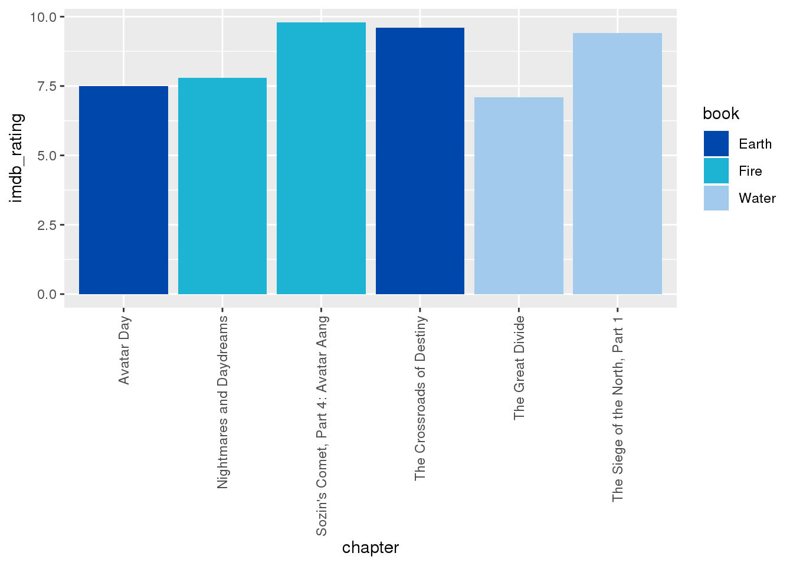

Avatar the Last Airbender is my most favorite show of all time, with a world that feels alive, characters that are fun, and magic that feels natural and fun. I am going to use the avatar.csv data set, which was found on Tidy Tuesday. The data consist of 11 variables and 13,385 observations. The id variable is an integer that is purely used to uniquely identifyeach row. The book is a character that shows which book, or season, the line is in. The book_num is the book number, showing whether the line is in season 1, 2, or 3. The chapter is the name of the episode. The chapter_num is the episode number in relation to the series. The character is the character speaking or acting during the scene, or whether it is a scene description. The full_text is the full text of the scene, ie. the scene description and character text. The character_words is the text coming from the characters if they speak, if they do not, then it is NA. The writer the writer, or writers, of the book/episode. The director the director of the episode. The imbd_rating the IMDB rating for the episode, or how people thought about it.
“Special Move!”
In other kids shows, like Power Rangers, the main characters and will yell say their special moves often, enough to have it ingrained into your head. How often does Avatar: The Last Airbender do this, and who does it the most?
 We took the data and filtered it specifically to only when they say their specific power. For Katara we did waterbending, Aang had airbending, Zuko had firebending, Toph had earthbending, and Sokka had his trusty boomerang. We found that Katara, over the series, says hers the most, with Sokka saying his weapon of choice the least. This may be because of the episodes they were featured in. Katara had multiple episodes where she met waterbending masters and was trained by them, so those episodes were great contributors to her word count. While Sokka used a boomerang at the beginning of the series, later on, he switched to a sword after a training episode, so that might explain why he is at the bottom of the list despite the boomerang being what he is most known for.
We took the data and filtered it specifically to only when they say their specific power. For Katara we did waterbending, Aang had airbending, Zuko had firebending, Toph had earthbending, and Sokka had his trusty boomerang. We found that Katara, over the series, says hers the most, with Sokka saying his weapon of choice the least. This may be because of the episodes they were featured in. Katara had multiple episodes where she met waterbending masters and was trained by them, so those episodes were great contributors to her word count. While Sokka used a boomerang at the beginning of the series, later on, he switched to a sword after a training episode, so that might explain why he is at the bottom of the list despite the boomerang being what he is most known for.
Highest and Lowest Rated Episode for Each Season
Avatar: The Last Airbender is a great TV show, but as with anything, there will always be favorites and least favorites. What episodes are the highest and lowest rated, and what is it for each season?
 From the graph, we can see that the episodes that are the final are the most well recieved for each season, which makes sense, the finals usually are the climax where everything happens. The episodes that are the lowest for each season all have something in common. They are all, for the most part, filler episodes. No plot is driven and they are mostly there to slow down the pace, so while not terrible episodes, it’s understandable why they are the least liked.
Ratings Over Time
Does Avatar: The Last Airbender improve or get worst with time? As with any shows, it’ll have valleys and peaks, so where do they occur?
 We can see from the graphs for the episodes and the best and worst graph from the previous question that most seasons follow a trend. At the beginning of the season, the rating is mid, it fluctuates and takes a large dip towards the middle, usually in one of the aforementioned worst episodes, and the climbs to the climax at the final of the season.
We can see from the graphs for the episodes and the best and worst graph from the previous question that most seasons follow a trend. At the beginning of the season, the rating is mid, it fluctuates and takes a large dip towards the middle, usually in one of the aforementioned worst episodes, and the climbs to the climax at the final of the season.
Most Chattiest Characters
Who talks the most in the show? There are many candidates, like Azula and her silver tongue, Katara saying the opening each episode, and Sokka with his witty quips. But who says the most lines in the show?
At the beginning of the show, we can see that Aang, Katara, and Sokka did most of the talking, as they were the main characters and the ones talking the most. Zuko and Iroh were also there, but they were mostly side characters or antagonist for the most part. We can see in the second season that the three main characters talk the most, but this time Sokka takes the number one spot. Toph is also introduced this season so she is also on the top 5, and weirdly enough, Iroh is on the list and not Zuko. In the third season, Sokka still takes the top spot, but Katara has been moved down and Zuko takes top 3 thanks to him joining the main team. Iroh has been kicked off for Toph, but that makes sense, since everyone in the top 5 are part of the main team.
Best Writer(s) Award (According to the Viewers)
The writers of this show are some of the best. They are able to write a compelling story line while adding funny jokes and character growth along the way. But who, or which group, has the highest average rated episodes?
writer <- avatar %>%
select(book_num, chapter_num,writer, imdb_rating) %>%
group_by(writer) %>%
summarise(score = mean(imdb_rating)) %>%
filter(!is.na(score)) %>%
arrange(score)
writer## # A tibble: 22 x 2
## writer score
## <chr> <dbl>
## 1 James Eagan 7.8
## 2 Ian Wilcox 7.9
## 3 John O'Bryan, Aaron Ehasz 7.9
## 4 Matthew Hubbard 8
## 5 Michael Dante DiMartino, Bryan Konietzko, Aaron Ehasz, Peter Goldfing… 8.1
## 6 Nick Malis 8.2
## 7 John O'Bryan 8.30
## 8 Michael Dante DiMartino, Bryan Konietzko, Aaron Ehasz, Peter Goldfinge… 8.3
## 9 Joshua Hamilton, Michael Dante DiMartino 8.4
## 10 Katie Mattila 8.5
## # … with 12 more rowsggplot(data = tail(writer, 10), aes(x = writer, y = score, fill = writer)) +
geom_bar(aes(reorder(writer, score)), stat = 'identity') +
xlab("Average IMDB Score") +
ylab("Writers") +
scale_fill_discrete(labels = c("A. Ehasz, DiMartino, Konietzko","Group of Writers", "Konietzko, DiMartino", "DiMartino, Konietzko", "E. Ehasz, Hedrick", "DiMartino", "E.Ehasz", "Hedrick", "Chan", "E.Ehasz, Hedrick, A.Ehasz, O'Bryan")) +
ggtitle("Average IMDB Score for Each Writer(s)") +
theme(axis.text.x = element_blank())We can see that the best episodes are written by a group of writers. Interestingly, We can see two people with the same last name, Ehasz. They are actually married and helped write the show together.
##Conclusion TBD